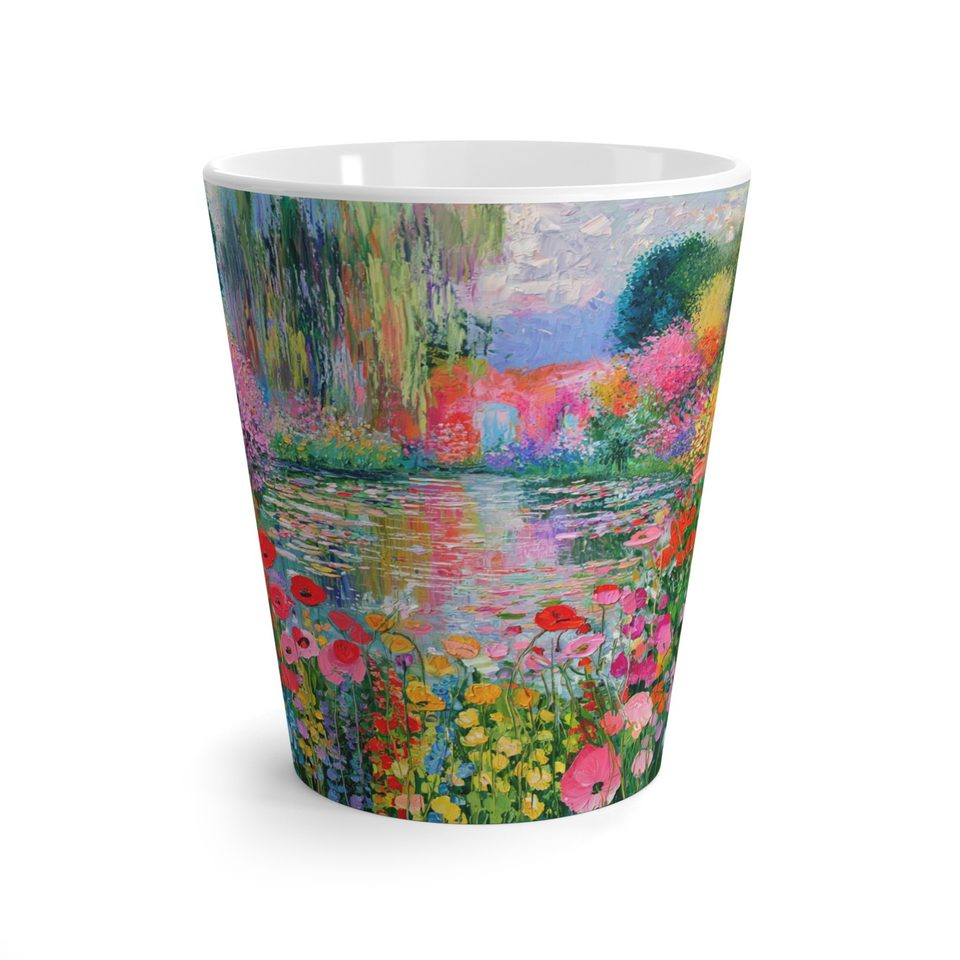

SEÇKİ 001 / KUPALAR
Sanat,
elinin altında.
Sabah kahvesine bir karakter, çay molasına biraz renk. Midjourney arşivinden seçilen 100 farklı tasarım, beş farklı kupa modelinde.
Ürünleri keşfet ↘Ürünler yükleniyor…


GÜNLÜK
MUTLULUK ✷
HER BİRİ AYRI BİR HİKÂYE
Kupa koleksiyonu—
Beğendiğin ürünleri kalp ile seç.
Detayları görmek için kupaya dokun.
Tasarım seçkisi · Satışa açılmadı
Bu seçime uygun ürün bulunamadı.
Bir fincandan fazlası.
Çizgiler, renkler, küçük hikâyeler. Her ürün, Printify üzerinde hazırlanmış gerçek bir ürün önizlemesidir.